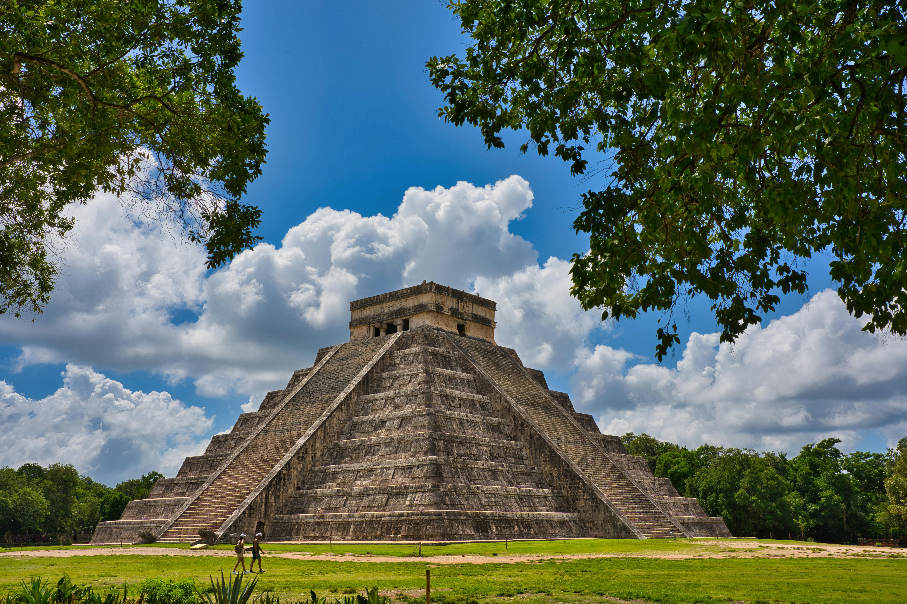

Discover the Stories Behind the World’s Most Iconic Places

The Colosseum, Rome, Italy
This colossal amphitheater, built between 70-80 AD, was the stage for gladiatorial contests, mock naval battles, and public spectacles. With a capacity of over 50,000 spectators, the Colosseum symbolized the might and ambition of the Roman Empire. Today, it stands as a testament to the enduring legacy of Roman engineering, attracting millions of visitors who come to marvel at its architectural brilliance and immerse themselves in centuries of history.

The Great Wall of China, China
Stretching over 13,000 miles across China, the Great Wall is one of the most impressive feats of human engineering. Originally constructed during the 7th century BC, the wall was built to protect the northern borders of Chinese states and empires from invasions. Throughout history, various dynasties extended and fortified the wall, with the most famous sections built during the Ming Dynasty (1368–1644). Today, the Great Wall is a UNESCO World Heritage Site, drawing travelers eager to walk in the footsteps of ancient warriors and take in sweeping views of the surrounding landscapes.
Chichen Itza, Yucatán, Mexico
Located in the heart of Mexico’s Yucatán Peninsula, this UNESCO World Heritage Site was once a thriving city between the 7th and 10th centuries AD. Chichen Itza is home to the iconic El Castillo, a massive pyramid that served as a temple to the Mayan god Kukulcán. During the spring and fall equinoxes, a shadow cast by the pyramid’s steps creates the illusion of a serpent descending, a stunning display of Mayan astronomical knowledge. A visit to Chichen Itza is a journey into the heart of Mayan history and one of the New Seven Wonders of the World.